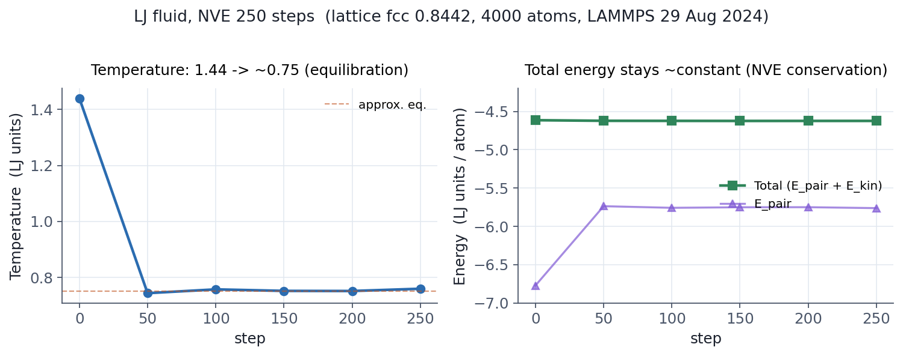

이 페이지에서 다룹니다
NOTE 31-01-00 · LAMMPS 시작하기
1. 일반 사항
A. 목적
- 이 노트는 LAMMPS 를 설치하고 첫 입력 스크립트를 실행하는 절차를 다룬다.
- LAMMPS 는 Sandia 국립연구소가 1990년대 후반부터 개발해 온 범용 분자동역학 시뮬레이션 패키지다.
- LAMMPS 는 원자, 입자, 거대 분자, 메타입자 같은 "점 입자" 시스템을 폭넓게 다룬다.
참고 LAMMPS 의 강점은 다음과 같다.
- 같은 입력 스크립트를 노트북 한 대부터 수만 코어 슈퍼컴퓨터까지 거의 그대로 쓸 수 있다. 코드 자체가 MPI 기반으로 설계되어 있다.
- Lennard-Jones, EAM, Tersoff, ReaxFF, OPLS, AMBER, CHARMM, COMPASS, MEAM, machine learning potential 등 수십 종의 상호작용 모델을 내장 또는 외부 패키지로 지원한다.
- 사용자 커뮤니티가 활발하다. 공식 매뉴얼은 1500쪽이 넘고, 포럼(lammps.org/forum.html)에는 매일 새 질문과 답변이 올라온다.
B. 적용 범위
- 대상 계는 Lennard-Jones(LJ) 입자 4000개로 이루어진 액체다.
- 원자 종류와 상호작용은 각각 한 가지다.
- 단위계는 환원 단위(reduced units)다. 외부 데이터 파일이나 힘장 라이브러리가 필요 없다.
C. 결과 요약
- 온도는 초기값 1.44 에서 첫 50 step 안에 0.75 부근으로 떨어진다.
- 총 에너지
TotEng은 약 −4.6231 부근에서 거의 일정하게 유지된다. - 직렬 1 코어, 250 step 의
Loop time은 0.350699 s 이다(LAMMPS 22 Jul 2025, conda-forge 빌드).
2. 준비 정보
A. 참조 자료
| 참조 | 제목 |
|---|---|
| LAMMPS 다운로드 페이지 | lammps.org/download.html |
| LAMMPS 사용자 포럼 | lammps.org/forum.html |
| NOTE 33-01-00 | 예제 E1 — LJ 액체 (NVE) 첫 실행 |
B. 공구 및 장비
| 항목 | 용도 |
|---|---|
LAMMPS 실행 파일 (lmp) |
시뮬레이션 실행 |
mpirun 또는 mpiexec |
병렬 실행 |
C. 소모품
| 항목 | 용도 |
|---|---|
in.lj |
LJ 액체 입력 스크립트(3.B 에서 작성) |
3. 절차
A. 설치 확인
- 아래 표에서 환경에 맞는 방법으로 LAMMPS 를 설치한다.
| OS / 환경 | 가장 빠른 설치 방법 |
|---|---|
| Linux (Ubuntu/Debian) | sudo apt install lammps |
| Linux (Conda) | conda install -c conda-forge lammps |
| macOS (Homebrew) | brew install lammps |
| Windows | WSL2 후 Ubuntu 방식 또는 공식 바이너리 (lammps.org/download.html) |
| HPC / 워크스테이션 | module load lammps 또는 소스 빌드 |
참고 소스에서 직접 빌드하면 포함할 패키지를 세밀하게 조절할 수 있다. 입문 단계에서는 패키지 매니저 설치로 충분하다.
- 터미널에서 다음을 실행한다.
lmp -h
- 도움말과 빌드에 포함된 패키지 목록이 출력되는지 확인한다. 출력되면 설치가 정상이다.
- 자기 환경에서 쓸 수 있는 실행 파일 이름을 확인한다. 빌드 방식에 따라
lmp,lmp_serial,lmp_mpi,lmp_<machine>등으로 달라진다.
참고
실행 파일 이름이 다를 때: 소스 빌드는 보통 lmp_mpi(MPI 빌드)와 lmp_serial(직렬 빌드)을 함께 만든다. 이 가이드는 일관되게 lmp 라고 쓴다. 자기 환경에 맞는 이름으로 바꿔 읽는다.
B. 입력 파일 작성
- 다음 내용을
in.lj라는 파일로 저장한다.
# in.lj — 가장 단순한 Lennard-Jones 액체
units lj
atom_style atomic
lattice fcc 0.8442
region box block 0 10 0 10 0 10
create_box 1 box
create_atoms 1 box
mass 1 1.0
pair_style lj/cut 2.5
pair_coeff 1 1 1.0 1.0 2.5
velocity all create 1.44 87287 loop geom
neighbor 0.3 bin
neigh_modify every 20 delay 0 check no
fix 1 all nve
thermo 50
run 250
참고 이 스크립트는 fcc 격자로 4000개 LJ 입자를 만들고 초기 속도를 무작위로 준다. 이후 NVE 앙상블에서 250 스텝 동안 적분한다.
C. 실행
주의
입력 파일은 -in in.lj 로 넘긴다. 매뉴얼은 lmp -in in.lj 형태를 권한다. lmp < in.lj 처럼 표준 입력으로 넘겨도 동작은 한다. 그러나 mpirun 또는 mpiexec 로 병렬 실행할 때 일부 환경에서 리디렉션 연산자가 제대로 동작하지 않는다.
- 직렬(1 코어) 또는 병렬(4 코어)로 실행한다.
# 직렬 실행 (1 코어)
lmp -in in.lj > out.lj
# 병렬 실행 (4 코어)
mpirun -np 4 lmp -in in.lj > out.lj
- 실행이 끝나면 출력 파일
out.lj와 로그 파일log.lammps가 생성되었는지 확인한다. 둘 다 텍스트 파일이므로 일반 에디터로 연다.
4. 시험 및 검사
A. thermo 출력 확인
out.lj끝부분의 표를 확인한다. 아래 값은 LAMMPS 22 Jul 2025(conda-forge 빌드)로 같은 입력을 직렬 실행해 얻었다.
Step Temp E_pair E_mol TotEng Press
0 1.44 -6.7733681 0 -4.6139081 -5.0199732
50 0.74368149 -5.7370606 0 -4.6218173 0.30804835
100 0.75715334 -5.7581426 0 -4.6226965 0.20850222
150 0.7518449 -5.7510464 0 -4.623561 0.22707058
200 0.75139921 -5.7500924 0 -4.6232753 0.25362795
250 0.75954471 -5.7621762 0 -4.623144 0.21729981
Loop time of 0.350699 on 1 procs for 250 steps with 4000 atoms
- 각 열의 의미를 확인한다.
Step은 시뮬레이션 스텝 번호다.Temp는 온도다.TotEng은 총 에너지(kinetic + potential)다.
- 온도가 1.44 에서 0.75 부근으로 떨어지며 평형에 이르는지 확인한다.
TotEng이 약 −4.6231 부근에서 거의 일정하게 유지되는지 확인한다. 일정하면 NVE 적분이 에너지를 잘 보존한 것이다.
참고 온도가 떨어지는 이유는 NVE 앙상블에서 초기 격자가 풀리면서 운동에너지가 포텐셜에너지로 나뉘어 들어가기 때문이다. 첫 시뮬레이션으로 NVE 를 자주 돌리는 이유도 이 에너지 보존 점검에 있다.
- 마지막 줄의
Loop time을 확인한다. 이 값은 시뮬레이션에 걸린 wall-clock 시간이며 성능 진단의 출발점이다.
참고
코어 수나 시스템 크기를 바꿔 가며 Loop time 의 변화를 보면 성능 감각을 가장 쉽게 익힐 수 있다.

B. 재현 여부 확인
경고 스텝별 거동이 재현되지 않으면 입력에 오타가 있거나 LAMMPS 버전이 아주 오래되었을 가능성이 높다.
- 자기 환경의 결과를 4.A 의 표와 비교한다.
- 마지막 자리 부동소수점은 조금 달라도 된다.
- 스텝별 거동은 같아야 한다. 온도는 1.44 → 0.75 부근으로 떨어지고 총 에너지는 보존된다.
5. 종료
B. 후속 작업
- 이
in.lj예제의 전체 입력·실행·출력은 예제 E1 — LJ 액체 (NVE) 첫 실행 에 한자리에 모여 있다.